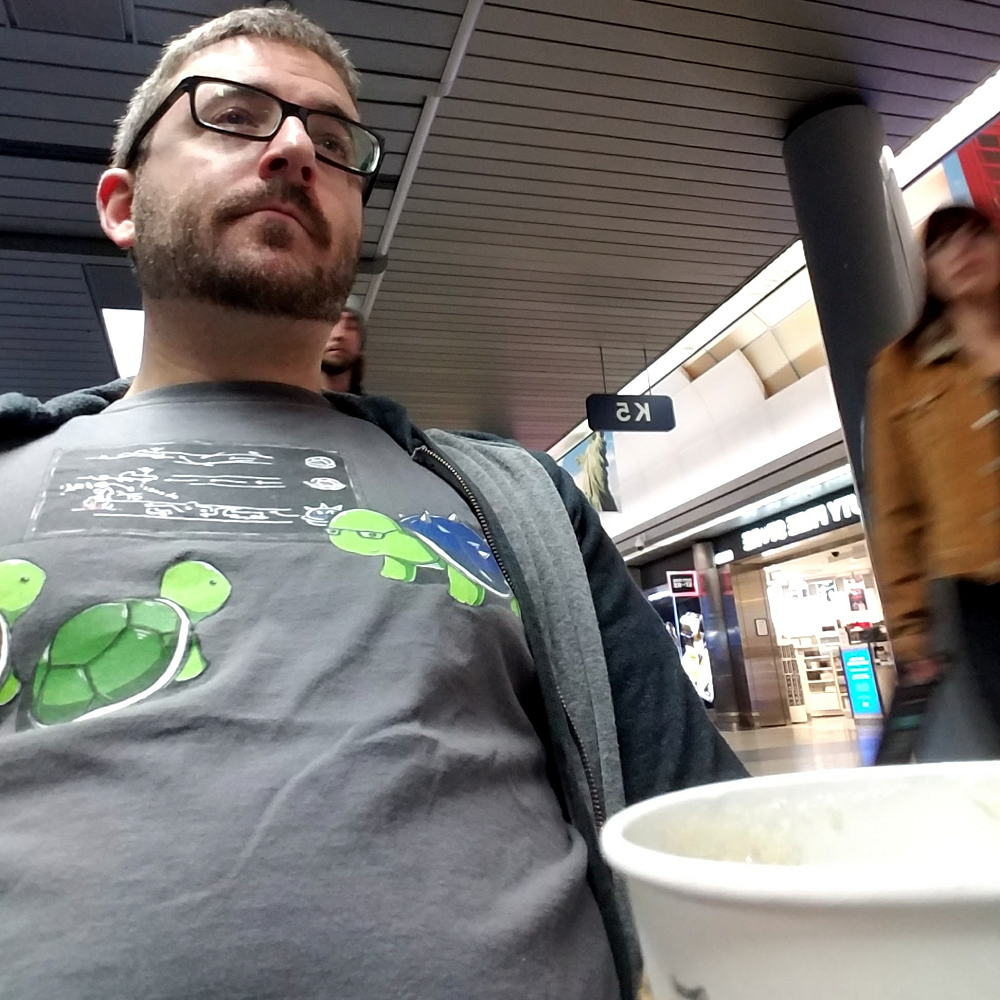

About Me

Brian grew up in the Chicago suburbs before studying Aerospace Engineering at IIT on the south side of Chicago. Now he works at FIC America, an automotive parts manufacturer, and is responsible for all production planning and ensuring on-time-delivery. To accomplish this he leads a team of 14 people in the Production Control department using the mindset of “ask first, act fast, judge never”.
When not working Brian likes to fill his schedule with things that push him to grow. This may be getting pushed by a trainer at the gym, reading books on leadership, or taking night classes to learn a new skill. When it’s time to relax though, Brian will usually be eating out with friends and family or sitting down with a good video game like Zelda or WOW.